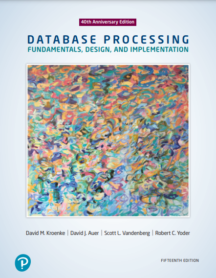

Courses History
Summary
At Algonquin College , I have successfully completed a wide array of course that encompass
computer sessionals, database management,
Java object-oriented programming, technical math for computer science,
web programming, Linux, and technical communications.
These courses have endowed me with proficient abilities in hardware and software configuration,
database design and administration, Java programming, problem-solving through mathematics,
web development,
Linux system administration, and effective communication of technical concepts.
Courses List
-
MAT8001C Technical Mathematics for Computer Science Level 1
The study of algebraic and transcendental functions serves as a fundamental foundation for Calculus, laying the groundwork for advanced mathematical concepts. Through this study, individuals gain proficiency in manipulating algebraic expressions, solving equations and linear systems, and comprehending the properties and graphical representations of both algebraic and transcendental functions. Furthermore, learners explore computer number systems and delve into Boolean algebra and logic, equipping them with problem-solving skills relevant to computer systems. Additionally, students delve into the addition and subtraction of vectors using vector components, further expanding their mathematical knowledge.
-
CST8215 Introduction to Database Level 1
The study of databases revolves around the storage and management of data, playing a crucial role in various information technology systems. In this course, individuals delve into the essential principles of designing relational databases through Entity Relation Diagrams (ERDs). They also gain proficiency in utilizing Structured Query Language (SQL) to construct, modify, and execute queries on a database. Emphasis is placed on creating databases that are secure, easily maintainable, and adaptable to evolving business needs, employing normalization techniques. Moreover, students explore the functions and components of a Database Management System (DBMS) and compare them to legacy systems and alternative methods of storing information.
-
CST8116 Introduction to Computer Programming Level 1
Acquiring essential knowledge in logic, problem-solving, and programming language structure forms a strong foundation for further studies in the field. The curriculum focuses on developing students' introductory skills in computer programming, emphasizing problem analysis and design. This involves utilizing algorithms, pseudocode, flowcharts, UML Class Diagrams, and testing, with the Java programming language as the implementation tool for problem solutions. The course introduces students to Java, covering sequential and selection structures, repetition structures, variables, constants, methods, constructors, one-dimensional arrays, object-oriented programming, classes, objects, abstraction, encapsulation, inputs, outputs, coding conventions, and documentation. Practical application of the theory is reinforced through hands-on laboratory assessments.
-
CST8101 Computer Essentials Level 1
Mastering computer software, hardware, and laptop management is vital for developing advanced technical programming skills. This entails configuring laptop environments, troubleshooting basic PC issues, creating backups, installing virus protection, and proficiently managing files using the Windows Operating System. Additionally, individuals will gain expertise in installing and configuring both the Windows Operating System and virtual machine environments. Exploring computer organization, including fundamental numerical systems and the essential hardware and software components required for program execution, is also covered.
-
ENL1813T Communications I Level 1
Effective communication skills are highly valued by employers across all disciplines and industries. Aligned with a practical and career-oriented approach, individuals concentrate on meeting the standards of efficient communication. This involves a combination of lectures, exercises, and self-directed learning to enhance proficiency in writing, speaking, reading, listening, researching and citing information, and utilizing technology for professional communication. This focus on communication fosters the development and reinforcement of skills essential for success in academic and professional settings.
-
CST8300 Achieving Success in Changing Environments Level 1
The rapid advancements in technology have given rise to a multitude of personal and professional options, urging individuals to discover their roles as responsible members of the evolving society. The 21st century offers abundant prospects, yet it also introduces potential risks and ethical dilemmas that call for conscientious resolutions. Through exploration, individuals assess their own abilities and capabilities, employing critical thinking and decision-making skills to address crucial concerns in our intricate society, characterized by diverse interests and perspectives.
-
CST2355 Database Systems Level 2
The curriculum focuses on the utilization of database systems for automating data processing tasks and integrating with information technology system security. Practical experience is gained by working with leading object-relational database management systems like Oracle and MySQL. Students also gain hands-on proficiency in advanced engineering modeling tools, as well as SQL, SQL scripting, and programming using Oracle's PL/SQL blocks. Key topics covered encompass advanced SQL, case structures, rollup and cube operations, metadata manipulation, data storage and retrieval, security and transaction control, and data warehousing.
 -
CST8102 Operating System Fundamentals (GNU/Linux) Level 2
Operating systems serve as the foundation of information technology systems, facilitating the seamless communication between hardware and software components. This course delves into the fundamental principles and elements of operating systems (OS) and their intricate interactions with hardware and software. Through theoretical exploration and hands-on assignments centered around the GNU/Linux operating system, participants gain a comprehensive understanding of operating system structures, process management, storage management, installation, configuration, and administration. The practical lab work reinforces the acquired knowledge by honing skills in utilizing the robust command-line tools and utilities of GNU/Linux.
-
CST8284 Object Oriented Programming (Java) Level 2
Proficiency in Object-Oriented Programming (OOP) is crucial for individuals pursuing a career in information technology as programmers. This course delves into the principles of OOP using Java as the programming language. It covers essential concepts such as encapsulation, inheritance, abstraction, and polymorphism, which are reinforced through practical implementations. Additionally, students gain an understanding of fundamental data structures, algorithms, and introductory Graphical User Interface (GUI) programming.

-
GED5002 Victimology (Elective) Level 2
The growing recognition of how crime affects individuals and society has led to the emergence of victimology as a noteworthy area of research. This field delves into the study of crime victims and the profound impact that crimes have on their lives, as well as on their families and the broader community. By examining the historical development of victimology and the victims' movement, students gain a deeper understanding of the nature and extent of victimization, along with the evolving theories and corresponding legislation in this field. Furthermore, the course explores victims' services, including their accessibility and the rights afforded to victims within the criminal justice system. Students also explore the implications of crime in various settings, such as workplaces, schools, and campuses, and the crucial importance of identifying individuals who may be at risk.
-
CST8285 Web Programming Level 2
The World Wide Web (WWW) has become an integral component of daily existence. Proficiency in web programming, website design, and implementation is fostered, employing JavaScript, HTML5, and PHP to tackle progressively interactive and intricate challenges. Practical assignments complement lectures, encouraging the construction and maintenance of individual websites.
-
ENL2019T Technical Communication for Engineering Technologies Level 2
Effective communication is crucial in a technically-driven interdisciplinary workplace, serving as a fundamental skill in an economy fueled by innovation. Individuals are exposed to various exercises and assignments that aim to cultivate independent and collaborative critical thinking, research abilities, writing proficiency, visual communication, and presentation skills pertaining to technical subjects.